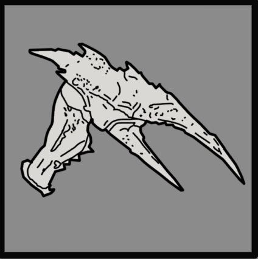

虫窝护卫
Hive Guard
技术信息
游戏版本
the 虫窝护卫 是一种中型 终结族 正面有  中型 护甲。它们能够进入蹲伏姿态以保护脆弱的身体。
中型 护甲。它们能够进入蹲伏姿态以保护脆弱的身体。
生成[edit | edit 来源]
Hive Guards can be first found on  容易。它们可以从……生成 Bug 突破, within patrols, and guarding 目标 和 Bug Nests.
容易。它们可以从……生成 Bug 突破, within patrols, and guarding 目标 和 Bug Nests.
Starting on  挑战, they can be found guarding Minor Places of Interest.
挑战, they can be found guarding Minor Places of Interest.
行为[edit | edit 来源]
虫窝护卫会接近 绝地潜兵，翻越地形和障碍物试图近距离用利爪攻击。它们可以侧向移动，并会试图截断试图跑过的绝地潜兵。被射击几次（无论远近）后，它们会蹲伏约三秒，将前腿收向身体。如果绝地潜兵持续开火，虫窝护卫会一直蹲伏直到绝地潜兵停止射击。
与……相似 武士们，虫窝护卫在头部开始流血后（具体来说是头部释放绿色液体时）会进入“狂暴”状态。这会在它们死亡前短暂提升移动速度。
虫窝护卫能够向空气中释放信息素云，引发虫族入侵。
结构解析[edit | edit 来源]
| 部件名称 | 生命值1 | 护甲值2 | 耐久2 | 主血量占比3 | 溢出上限4 | 构造5 | 致命 | ExDR6 | |
|---|---|---|---|---|---|---|---|---|---|
| Main | 500 | 30% | - | - | None | Yes | 0% | ||
| Head | 250 | 35% | 75% | No | 200 [75/秒] | Yes | 100% | ||
| Claws (2) | 100 | 0% | 25% | No | None | No | 100% | ||
| 前跗节 板甲护甲(2) |
125 | 0% | 45% | No | None | No | 100% | ||
| Front 腿部(2) |
125 | 0% | 45% | No | None | No | 100% | ||
| Rear 腿部(2) |
125 | 0% | 35% | No | None | No | 100% |
Disclaimer: Each highlighted part with a count has its own 生命值. Parts without a count share 生命值 pools.
1) Parts with their HP listed as "Main" do not have their own individual 生命值. All 造成伤害 to these parts is transferred to the enemy's 主生命值 pool.
2) Refer to 护甲 values and enemy 耐久度 as defined in 伤害 for more information.
3) 造成伤害 to a part will also be transferred in part or in full to 主生命值. If set to 0%, no 伤害 is transferred.
4) If set to "Yes", 伤害 transferred 对主血量 is capped by the combined 生命值 and 构造 of the part.
5) 构造 acts as a secondary 生命池 that, once Main or limb 生命值 has been depleted, may decay. The first number is the total 构造 and the second is the 衰退速率. If set to 0/s there is no decay and the 构造 behaves as extra 生命值.
6) ExDR means 爆炸 伤害抗性, and can 射程 from 0 to 100%. If set to 100%, the limb cannot take 爆炸伤害; The 爆炸伤害 will instead 目标 Main. Refer to 伤害 for more information.
- Note: This 机械师, known as Affected By 爆炸 can only occur once per 爆炸, regardless of 100% ExDR parts hit, and the 爆炸's 护甲穿透 must match or exceed 主体护甲 to deal 伤害 对主血量. However, if the same 爆炸 has already damaged Main, this 机械师 will not trigger.
武器配置[edit | edit 来源]
重爪

虫窝护卫的利爪比同类战士品系明显更有分量，但这并不改变它们的巨大威力，因为虫窝护卫在誓死保卫虫巢时依然凶猛攻击。
| 属性 | Value | |
|---|---|---|
| 55近战伤害 65耐久伤害 | ||
| 4/0/0/0 | ||
| 近战 | ||
| 近战 | ||
| 20 | ||
| 20 | ||
| 10 | ||
战术信息[edit | edit 来源]
- 自然地，
 中型 中型穿甲武器和爆炸物是消灭虫窝护卫的最佳选择。
中型 中型穿甲武器和爆炸物是消灭虫窝护卫的最佳选择。 - 如果命中它的
 Very 轻型 身体在……情况下不是可行选项 中型 穿甲武器和爆炸物是消灭虫窝护卫的最佳选择。
Very 轻型 身体在……情况下不是可行选项 中型 穿甲武器和爆炸物是消灭虫窝护卫的最佳选择。 - 两名绝地潜兵
 轻型 穿甲武器可以轻松利用虫窝护卫的防御，射击头部压制它，同时另一名绝地潜兵侧翼包抄。
轻型 穿甲武器可以轻松利用虫窝护卫的防御，射击头部压制它，同时另一名绝地潜兵侧翼包抄。 - 虫窝护卫蹲伏时正面仍然脆弱；其前腿和头部之间有一个小缝隙，可以击中主体。
- 摧毁虫窝护卫的2只利爪也可以杀死它们。
- 它的“狂暴”状态很少见，因为虫窝护卫在被多次击中头部后会优先蹲伏。
- 不蹲伏时，可以通过射击护甲后方无护甲的部位来截断它的腿，降低其防护。
- 高每秒伤害 中型 穿甲武器，例如 M-1000 Maxigun, MG-43 机枪，或 SMG-32 Reprimand，可以穿透头部护甲并在虫窝护卫构成威胁前将其杀死。
- 由于它们相对安静，如果绝地潜兵被其他虫子追着分散注意力，有时会被它们偷袭。
- 火焰 是虫窝护卫的有效反制手段，因为其
 重型 护甲穿透。这使得……之类的火焰喷射器 FLAM-40 火焰喷射器，以及……之类的手榴弹 G-10 燃烧弹 和 G-13 燃烧弹 Impact 对这些敌人特别有效，其他能施加此效果的武器也一样，例如 SG-451 Cookout and the SG-225IE Breaker 燃烧弹.
重型 护甲穿透。这使得……之类的火焰喷射器 FLAM-40 火焰喷射器，以及……之类的手榴弹 G-10 燃烧弹 和 G-13 燃烧弹 Impact 对这些敌人特别有效，其他能施加此效果的武器也一样，例如 SG-451 Cookout and the SG-225IE Breaker 燃烧弹.
图集[edit | edit 来源]
- In-game
变更历史[edit | edit 来源]
补丁
描述
1.006.203
2026-05-06
1.006.202
2026-04-28
1.006.100
2026-03-17
1.004.100
2025-10-23
未记录变更
- Slightly harder to set on 火焰
- 最小 ignition threshold从2提升至2.1
- 最大 ignition threshold从3提升至3.3
- 对火焰伤害略微不那么脆弱
- 火焰伤害倍率从100%降至80%
- 头部耐久度从0%提升至35%
- 身体耐久度从0%提升至30%
装甲兵 • Brawler • 机械统帅 • Rocket Raider • 特攻 Raider • Marauder • MG Raider • 狂暴者 • 蹂躏者 • Rocket 蹂躏者 • 重型 蹂躏者 • 侦察纵步者 • Reinforced 侦察纵步者 • Hulk Obliterator • Hulk Scorcher • Hulk Bruiser • War Strider • Annihilator Tank • Shredder Tank • Barrager Tank • 炮舰 • 运输舰 • 移动工厂
防空 阵地 • 机器人制造厂 • 机器人 MG 阵地 • 机器人哨站 • Bulk 构筑者 • Cannon Turret • 摧毁 广播 网络 • 探测器 Tower • Enemy Bio-Processors • Erase 恐怖分子 Memorials • 炮舰 设施 • 迫击炮台 • 破坏 Air Base • 战略配备干扰器 • Bunker Turret